Week by week
You will find the course announcements and daily activities here.
Week 0 : Sept 22 - 28
THIS WEEK ONLY: The schedule and rooms remain the same, but Annie will lead the Thursday setup session, and Carmen will lead the full class on Friday. Everyone is expected to attend both.
Assignments (due by the end of Thursday)
Read the course syllabus. You will find it on the landing page for our EDS 220 course website.
Complete the entry survey. This will help the teaching team get to know you and your expectations for the course. The survey is part of your participation grade. https://forms.gle/s6mJ3BcZR6U7a2Q97.
Setup session (Thursday)
- Setup of discussion sections repository following the repository setup instructions
- Python assessment. This is not graded and completion counts towards participation grade.
Class 1 (Friday)
- Course introduction slides
- Set up of GitHub repository for in-class coding sessions.
- Covered Python review up to “Objects” section.
Create a new repository on GitHub. Use the following settings:
Repository name:
eds220-2025-in-class.Description: In-class work for the EDS 220 MEDS course.
Visibility: Keep the repository public.
Don’t select any template to start.
Add a README file.
Add a Python .gitignore template.
Add the MIT License.
In GitHub, update your repository’s README by:
- Deleting all the text that was automatically generated when you created the repo.
- Copy-pasting the markdown text below and update
[YOUR NAME HERE]. Commit your changes.
# EDS 220 In-Class Repository
This repository hosts all the work completed by [YOUR NAME HERE] during the EDS 220 - *Working with Environmental Data* lectures.
## Course Information
- **Course Title:** [EDS 220 - Working with Environmental Datasets](https://bren.ucsb.edu/courses/eds-220)
- **Term:** Fall 2025
- **Program:** [UCSB Masters in Environmental Data Science](https://bren.ucsb.edu/masters-programs/master-environmental-data-science).
Teaching Team:
- **Instructor:** [Carmen Galaz García](https://github.com/carmengg)
- **Co-Instructor:** [Annie Adams](https://github.com/annieradams)
Complete materials for the discussion sections and additional resources can be found on the [course website](https://meds-eds-220.github.io/MEDS-eds-220-course/).Add the URL to your GitHub repository to this spreadhseet.
Clone your new repository into your
MEDS/EDS-220directory in workbench-1.
- In your
EDS-220/eds220-2025-in-classdirectory, create a new Python notebook calledweek1-pandas-series.ipynb. - Read the notes chapter on
pandasseries data frames and follow along with the code. - Read the best practices to write comments in the notes.
- Solve the check-in exercises. We’ll present these during class.
- Make a summary of the lesson. What are the most important concepts or ideas?
Week 1 : Sept 29 - Oct 5
Class 2 (Tuesday)
- Finished Python review.
- Student presentations of
pandas.Seriesandpandas.DataFramesexercises.
To store your personal access token (PAT) in the server:
1. Have a PAT ready
If you already have a PAT that you can copy paste, you can skip to step 2. Otherwise, create or regenerate one. You can follow the instructions in the MEDS installation guide or create or regernerate one directly through GitHub.
2. Set up the git credential helper
Using the terminal, navigate to the directory from where you want to push your updates. Make sure you are on that directroy (for example, verify you are on the
eds-2025-in-classby runningpwdon the terminal).Run the following command on the terminal:
This indicates to git that you want to store the PAT instead of caching it.
- Run
git config --global --liston the terminal. You should see something like this as the output:
That last line indicates that the credential helper is now store.
3. Complete a push
Go through the steps to make a push. Git will prompt you for your credentials, use your GitHub username and use the PAT as the password. Press enter and finalize the push!
4. Verify credentials
Go to your user’s home directory by running
cd ~.Run
more .git-credentials. You should see something like this as the output:
This means your PAT is now stored (the PAT here is an example).
Git should have now stored your PAT on the server!
- Create a directory called
datawithin youreds220-2025-in-classrepository. - Download the CSV file
wetlands_seasonal_bird_diversity.csvfrom our shared drive. - Do not push this file to GitHub.
Class 3 (Thursday)
- Completed activity (see below) to add the
datadirectory to the.gitignorefile of theEDS-220/in-class-notebooks/directory. - Covered
pandassubsetting notes up to…
Setup:
Download the CSV file
wetlands_seasonal_bird_diversity.csvfrom our shared drive.In the workbench 1 server, inside your
EDS-220/in-class-notebooks/directory, create a new directory calleddata.Using the file navigation panel, upload the
wetlands_seasonal_bird_diversity.csvfile to thedatadirectory.
In the terminal:
- Verify you are in the
in-class-notebooks/directory by usingpwd. Your output should look like this:
- Run
git status. At the end of the output you’ll see:
This means git has detected that the data directory exists but it is not yet tracking changes in it. We are in charge of deciding whether we want to track changes in it or not!
- Run
lsto see the files in the directory. Your output will look like this, notice the.gitiginorefile is not listed:
- Run
ls -ato see all files in the directory, including hidden files (those that start with a period.). At this point, your output will look like this:
. README.md
.. data
.git week1-lesson1-python-review.ipynb
.gitignore week1-lesson3-pandas-subsetting.ipynb
.ipynb_checkpointsRun
nano .gitignore. This will open the.gitignorefile in thenanoeditor.Add the
datafolder to the.gitignorefile by adding this text at the top of the file:
- Once you have made your changes, save the file:
- In
nano, pressCTRL + O(the letter O, not zero) to save. - Press
Enterto confirm the file name (.gitignore).
Exit the editor by pressing
CTRL + X.Run
less .gitignoreto scroll through the.gitignorefile and verify the changes are there:
- Use the arrow keys or
Page Up/Page Downto scroll through the file. - Press
qto exit.
Run
git statusand check the output. Thedatadirectroy will no longer be listed! You will see your.gitgnorehaving changes ready for commit.Commit and push your changes to the
.gitignore.
- In your
EDS-220/eds220-2025-in-classdirectory, create a new Python notebook calledweek2-basic-plotting.ipynb. - Read the notes on basic plotting and follow along with the code.
- Solve the check-in exercises. We’ll present these during class.
- Make a summary of the lesson. What are the most important concepts or ideas?
Discussion section (Friday)
There’s no setup for this week’s discussion section.
Week 2 : Oct 6 - Oct 12
Class 4 (Tuesday)
- Finished
pandassubsetting notes. - Student presentations of basic plotting exercises.
Task 1
- In your
EDS-220/eds220-in-classdirectory, create a new Python notebook calledweek2-updating-dataframes.ipynb. - Read the notes on updating dataframes up to the end of the “Removing columns” section and follow along with the code.
- We will cover the “Updating values” section during class. The class will start assuming you have all the data loaded.
Task 2
- In your
EDS-220/eds220-in-classdirectory, create a new Python notebook calledweek2-groupby.ipynb. - Read the notes on grouping and follow along with the code.
- Summarize the lesson and solve the check-in exercise. We’ll present it during class.
Class 5 (Thursday)
- Short review of updating dataframes notes up to “Updating values” section.
- Covered “Updating values” section of the updating dataframes notes.
- Student discussion of grouping notes and presented solutions for check-in.
- Install VS Code on your local computer. MEDS installation guide
Discussion section
Complete steps 1, 2, and 3 of the second discussion section to load the data before the discussion section.
You’ll be working on exercises 4-9 during section, so it is important that you have the data ready to go tomorrow.
Check-in with your discussion section teams via Slack to make sure you’re all ready to go on Friday!
Week 3 : Oct 13 - Oct 19
Class 6 (Tuesday)
- Covered conda environments notes on the workbench and slides.
- Set up VSCode to work on personal computers, without the course conda environment.
Create a
MEDS/EDS-220directory in your personal computer.Open VSCode.
Add a new bash terminal in it.
Confirm git installation by running
git versionin the terminal. If git is installed you will get something similar to
If you don’t get a similar output, install git by following the MEDS installation guide.
Clone your
eds-220-in-classrepository inside theMEDS/EDS-220directory. You can do this using the terminal or using the VSCode interface:
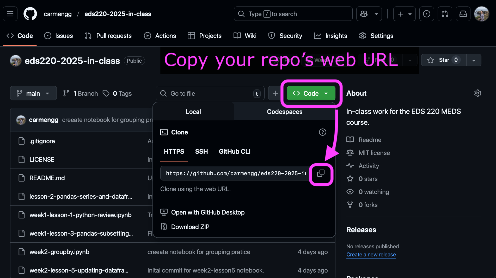
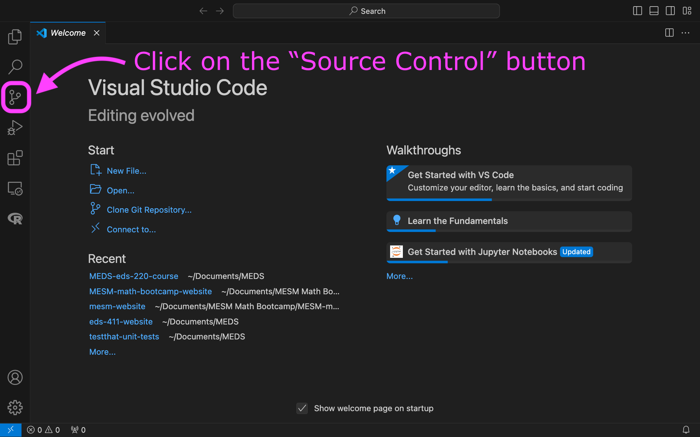
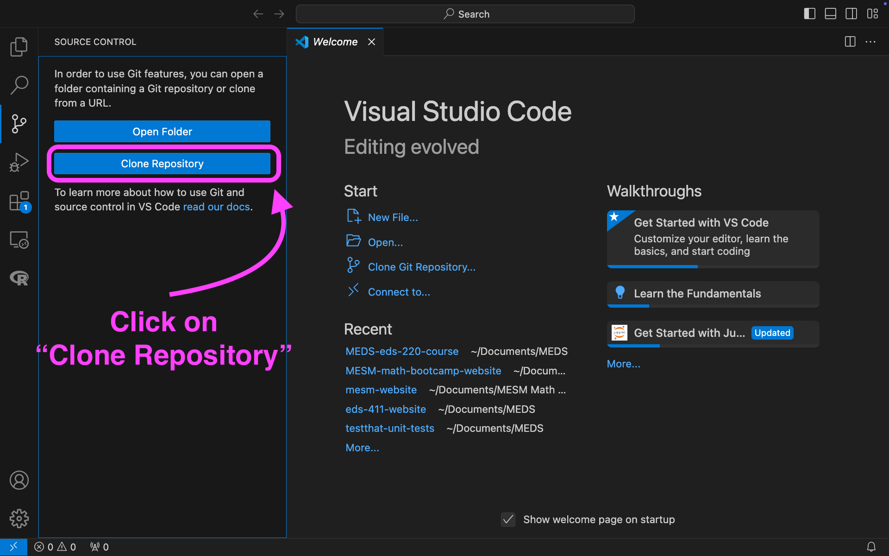
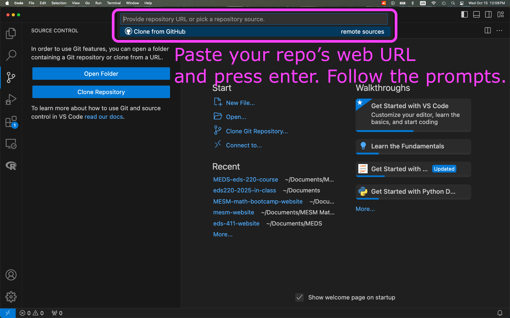
- Confirm your conda installation by running
conda infoin the terminal. If conda is active you will get something similar to
active environment : base
active env location : /Users/galaz-garcia/opt/anaconda3
shell level : 1
[...]
UID:GID : 502:20
netrc file : None
offline mode : FalseIf conda needs to be added to the shell profile, follow the troubleshooting steps in the MEDS installation guide within a bash terminal (not Powershell if you are on Windows).
Install Python extension to VSCode:
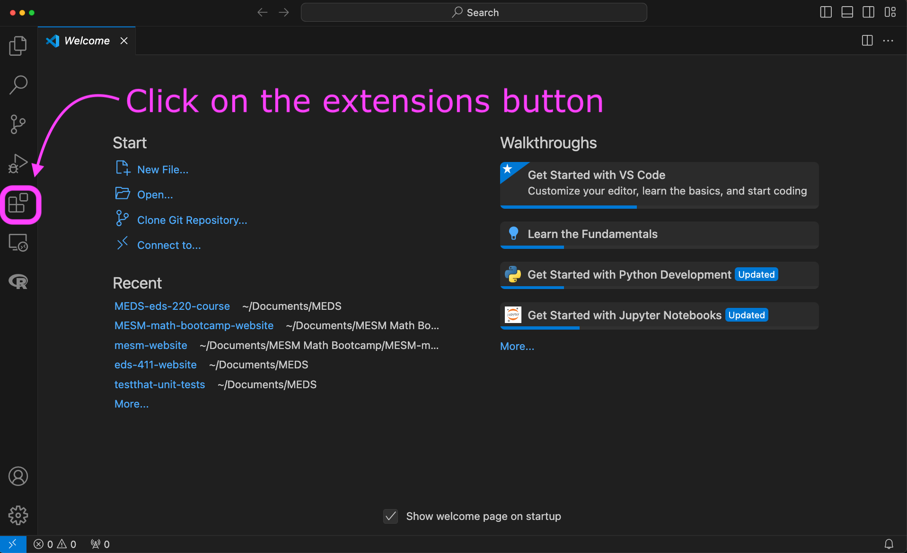
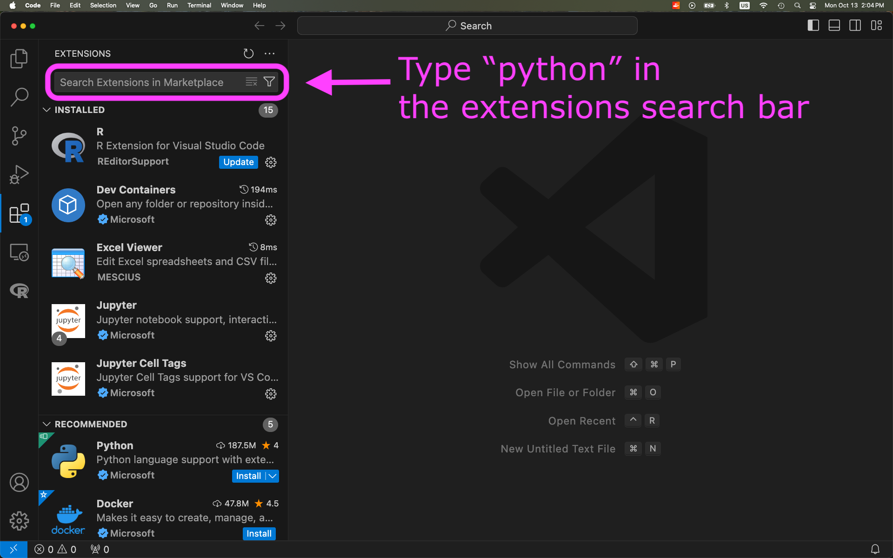
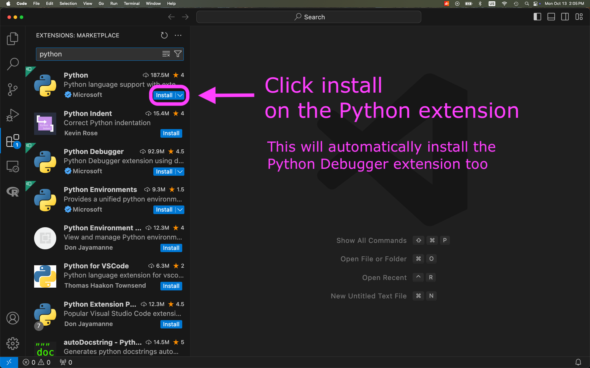
Class 7 (Thursday)
- Built conda environment for the course on personal computers.
- Covered time series notes @ workbench.
- Reviewed git workflow with personal computer and workbench.
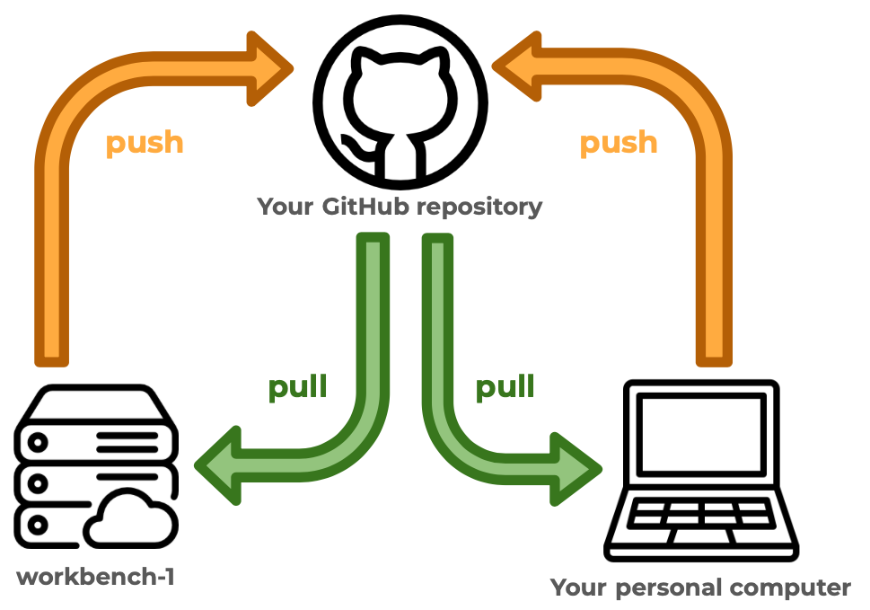
Make sure you have completed the VSCode set-up before creating the environment.
Open VSCode on your computer.
Download the following YAML file and move it into your
eds220-in-classdirectory: https://github.com/MEDS-eds-220/MEDS-eds-220-course/blob/main/eds220-env.ymlOpen a bash terminal inside VSCode and in it:
- Verify you are in the
eds220-in-classdirectory. - Verify that the
eds220-env.ymlfile is in the directory. - Run the following conda command to build the environment used for the course:
It will take about 15 minutes to build the environment. Once conda has finished, verify that the environment was created by running conda env list.
Make sure you have built the eds220-env before creating the kernel.
Open VSCode on your computer.
Add a new bash terminal in it.
Verify you have the
eds220-envconda environment available by running
- Activate the
eds220-envby running
Verify the environment has been activated.
Run
- Verify that the kernel has been created by running
The output should look similar to this:
Available kernels:
eds220-env /Users/galaz-garcia/Library/Jupyter/kernels/eds220-env
python3 /Users/galaz-garcia/opt/anaconda3/share/jupyter/kernels/python3Close and reopen VSCode.
To use the new kernel, open a Jupyter notebook on VSCode and…
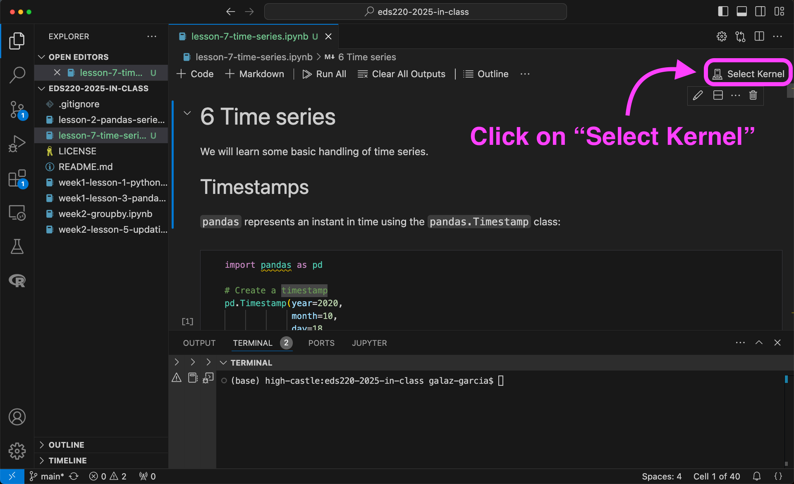
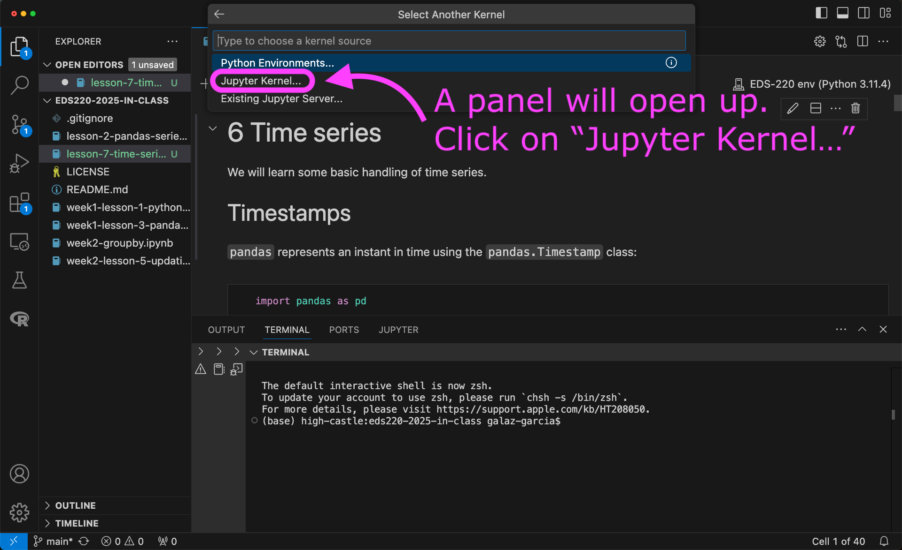
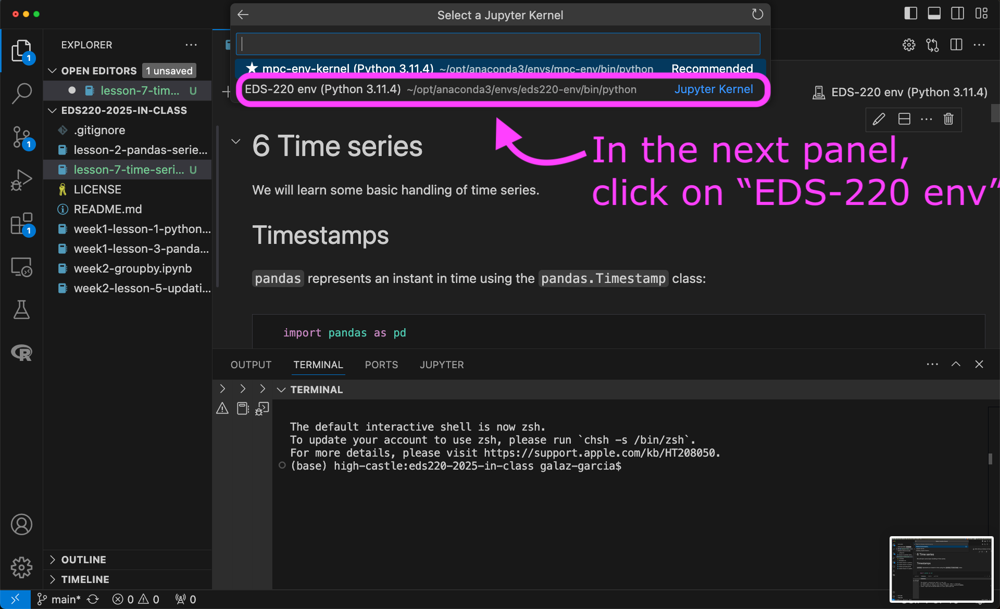
Read the notes on coordinate reference systems and vector data formats. Most of it should be review from EDS 223. We will have some questions to test your understanding of key concepts at the start of the next class.
Discussion section (Friday)
Complete steps 1 of the third discussion section. There’s no data to be loaded.
You’ll be working on exercises 2-8 during section, so come prepared with some prior knowledge of this dataset..
Check-in with your discussion section teams via Slack to make sure you’re all ready to go on Friday!
Week 4 : Oct 20 - Oct 26
Class 8 (Tuesday)
- Went over git merge conflict slides.
- Installed Quarto following MEDS installation guide and installed the VSCode Quarto extension.
- Completed activites 1 and 2 to practice git merge conflicts.
- In the
eds220-in-classrepository in your personal computer, create a directory calleddata. - Confirm the
datafolder is not being tracked by git. - Download the directories file
ca_state_boundaryandgbif_sus_scrofa_californiafrom our shared drive. You should have the follwing file structure:
Class 9 (Thursday)
- Coordinate reference systems and vector data types review and quiz!
- Covered the
geopandasnotes up to plotting the first preliminary map (withoutmatplotlib).
The following steps take place in your personal computer.
- Follow the steps in the About the data section of the Streamline your code notes to download the 2022 TIGER shapefiles of the US states.
- Place the
tl_2022_us_statefolder containing the shapefile files in yourEDS-220/eds220-in-class/datadirectory. - In your
EDS-220/eds220-in-classdirectory, create a new Python notebook calledweek5-code-streamlining.ipynb. - Add the following three cells to your notebook. Make sure you have the data loaded before class! 🙌
Cell 1:
Cell 2:
# Import power plants data
URL = 'https://raw.githubusercontent.com/carmengg/eds-220-book/refs/heads/main/data/power_plants_epsg4269.csv'
power_plants = pd.read_csv(URL)
power_plants.head()Cell 3:
Discussion Section (Friday)
There’s no setup for this week’s discussion section.
Week 5 : Oct 27 - Nov 2
Class 9 (Tuesday)
- Finished
geopandasnotes. - Covered notes on streamlining your code up to (including)
assert.
Class 10 (Thursday)
- Finished notes on streamlining your code.
The following steps take place in your personal computer.
- Read the About the data section in the Reprojecting notes.
- Download the Admin O - Countries and add it to the
datafolder for youeds-220-in-classdirectory. - In your
EDS-220/eds220-in-classdirectory, create a new Python notebook calledweek6-reprojecting.ipynb - Add the following three cells to your notebook. Make sure you have the data loaded before class! 🙌
Cell 1:
Cell 2:
# Import countries shapefile
fp = os.path.join('data','ne_50m_admin_0_countries','ne_50m_admin_0_countries.shp')
countries = gpd.read_file(fp)
countries.columns = countries.columns.str.lower() # Simplify column names
countries = countries[['admin', 'type', 'geometry']]
countries.head(3)Cell 3:
# Import Arctic communities GeoJSON directly from URL
URL = 'https://cn.dataone.org/cn/v2/resolve/urn%3Auuid%3Aed7718ae-fb0d-43dd-9270-fbfe80bfc7a4'
communities = gpd.read_file(URL)
communities.head()Cell 3:
Discussion section (Friday)
No work to do ahead of the discussion section.
Week 6 : Nov 3 - Nov 9
Class 11 (Tuesday)
- Covered functions and exercises
Exercise 1
Create a function called power_source_counts that, given a power source, returns a Series with the counts of power plants by state that use that source.
Follow the steps:
- solve the problem for a specific example (e.g., ‘wind’)
- identify which parts of the code need to be generalized and update these parts
- wrap this into a function
- add additional parameters or assert statements if needed
Exercise 2
- Recreate the following plot.
- Make a function that produces this plot for any power source.
- Brainstorm ways in which your function might break or not produced the desired output.
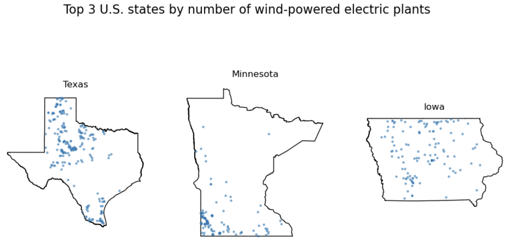
Bonus Create a function that, for a given power source, produces a plot like this one. Many ways of doing it, a hint could be to zip three things together: the axes, the top 3 states, and the counts of power plants in those states.
# Example of more than two zipped items
for a, b, c in zip([1,2,3], ['x','y','z'], [10,20,30]):
print(a, b, c)
Class 12 (Thursday)
- Covered the reprojecting notes.
- Read the About the data section in the clipping notes.
- Download the Natural Earth’s populated places (simple, less columns) dataset and add it to the
datafolder for youeds-220-in-classdirectory. - Download the Natural Earth’s roads dataset and add it to the
datafolder for youeds-220-in-classdirectory. - Download the notebook
week7-clipping-STUDENTS.ipynb, rename it toweek7-clipping.ipynb, and move it into yourEDS-220/eds220-in-classdirectory. - Edit the notebook if needed to load the three datasets (the third is already in your computer). Make sure you have all the data loaded before class! 🙌
Discussion section
We’ll be using a fairly big dataset so we’ll work on the workbench where this data has already been stored.
You can work directly on the workbench or you can practice using VSCode to SSH into workbench-1.
If you decide to SSH into workbench-1, practice before discussion section and make sure you can run a notebook (any) from your in-class directory.
Week 7 : Nov 10 - Nov 16
It’s Veteran’s day. Enjoy the long weekend!
Class 13 (Thursday)
- Covered the clipping notes.
We started from a pre-filled notebook week7-clipping-STUDENTS.ipynb that students downloaded before class.
Download the notebook week8-xarray-STUDENTS.ipynb, rename it to week8-xarray.ipynb, and move it into your EDS-220/eds220-in-class directory.
There’s nothing to run in this notebook. We’ll just use it to have some pre-filled code.
Discussion Section (Friday)
Download the notebook
week7-refactoring.ipynbfrom the course’s Google Drive and move it inside youreds-220-sectionsdirectory.Download the zip file
WDPA_Nov2025_Latam.zipfrom the course’s Google Drive, unzip it, and add it to thedatadirectory in youreds-220-sectionsdirectory.Run the
week7-refactoring.ipynbnotebook to make sure you can access the data.
Week 8: Nov 17 - Nov 23
Class 14 (Tuesday)
- Reviewed how the NetCDF data format is structured covering these slides.
- Covered the
xarraynotes.
We started from a pre-filled notebook week8-xarray-STUDENTS.ipynb.
- Download the following datasets from the course’s Google Drive and add them to the
datadirectory in youreds-220-sectionsdirectory:
NAIP_SB/NAIP_SB_nir.tifNAIP_SB/NAIP_SB_rgb.tifSB_aoi.geojson
Download the notebook
week8-rioxarray-STUDENTS.ipynb, rename it toweek8-rioxarray.ipynb, and move it into yourEDS-220/eds220-in-classdirectory.Update the file path in the code cell so it points to your data folder containing the rasters and the geoJSON file. There’s nothing to run in this notebook. We’ll just use it to have some pre-filled explanations.
Class 15 (Thursday)
- Reviewed core concepts about rasters.
- Covered the
rioxarraynotes.
We started from a pre-filled notebook week8-rioxarray-STUDENTS.ipynb.
Download the notebook week9-STAC-STUDENTS.ipynb, rename it to week9-STAC.ipynb, and move it into your EDS-220/eds220-in-class directory. There’s nothing to run in this notebook. We’ll just use it to have some pre-filled code.
Discussion section (Friday)
Find fire perimeters for the Eaton and Palisades fires that occurred in Los Angeles County on 2025. There are several datasets with this information online. You will need to independently select one from a reputable source (it may be more than one file). These are the same files you will use for assignment 4.
Download the 2024 Environmental Justice Index data for California in the geodatabase data format. Add it to the
datadirectory in youreds-220-sectionsdirectory.